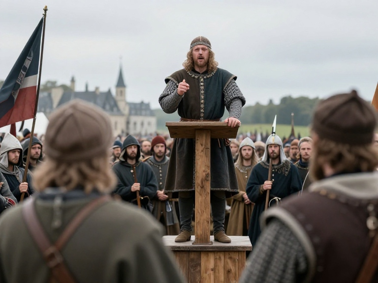

Arrivé sur la place publique, le seigneur de la cité donne un discour de motivation aux soldats et conscrits. Ne te sentant pas redevable à ce pays tu cherche du regard une ocasion pour déserter. Par chance tu observe des conscrits se diriger vers la rivière.